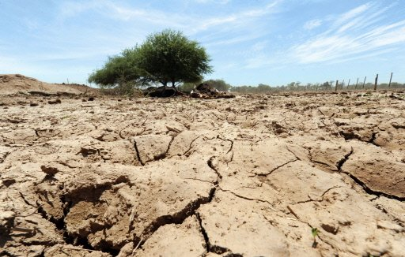
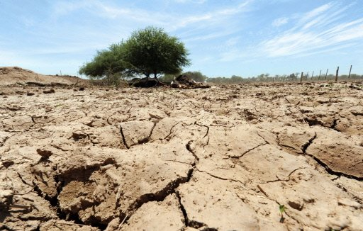

ໃນປີ 2010, ປະເທດລາວມີພື້ນທີ່ປົກຄຸມດ້ວຍປ່າໄມ້ຢູ່ 9.55 ລ້ານເຮັກຕາ ຫຼື 40% ຂອງເນື້ອທີ່ດິນທັງໝົດ. ຢ່າງໃດກໍ່ຕາມ, ຕົວເລກນີ້ຖືວ່າຫຼຸດລົງຢ່າງຫຼວງຫຼາຍຈາກເນື້ອທີ່ທີ່ປົກຄຸມດ້ວຍ
ປ່າໄມ້
ໃນຊຸມປີ 1940 ເຊິ່ງມີຢູ່ 17 ລ້ານເຮັກຕາ ຫຼື ເກືອບ 72% ຂອງເນື້ອທີ່ດິນທັງໝົດ.ຂໍ້ມູນຈາກ Forest Monitoring for Action (FORMA) ເຊິ່ງຈະແຈ້ງເຕືອນເມື່ອດາວທຽມກວດພົບ
ຄວາມ
ປ່ຽນແປງຢ່າງໄວວາຂອງພື້ນທີ່ປ່າໄມ້ທຽບໃສ່ເດືອນທີ່ຜ່ານມາ, ໃຫ້ຮູ້ວ່າການສູນເສຍພື້ນທີ່ປ່າໄມ້ຍັງຄົງເປັນບັນຫາທີ່ພົ້ນເດັ່ນໃນລາວ. ລາວມີພຽງແຕ່ 6% ຂອງປ່າຕົ້ນກຳເນີດເທົ່ານັ້ນທີ່ຍັງຄົງເຫຼືອຢູ່
ແລະ93% ຂອງປ່າໄມ້ໃນລາວແມ່ນຢູ່ໃນພາວະຟື້ນຕົວຂັ້ນຕ່າງໆພາຍຫຼັງຖືກທຳລາຍ.ການຕັດໄມ້ທຳລາຍປ່າ ຫຼື ການຫຼຸດລົງຂອງພື້ນທີ່ປົກຄຸມປ່າໄມ້ ແມ່ນມີສາເຫດມາຈາກຫຼາຍປັດໄຈ. ເຖິງຢ່າງໃດກໍ່ຕາມ
, ປັດ
ໄຈຕົ້ນຕໍລວມມີການຄ້າໄມ້ເຖື່ອນ, ການຂະຫຍາຍພື້ນທີ່ກະສິກຳ ລວມເຖິງການປູກໄມ້ອຸດສາຫະກຳ, ການສ້າງເຂື່ອນໄຟຟ້ານໍ້າຕົກ ແລະ ຊົນລະປະທານ, ການຂຸດຄົ້ນບໍ່ແຮ່, ໄຟປ່າ ແລະ ການ
ສ້າງຖະ
ໜົນຫົນທາງ. ແຜນພາບຂ້າງລຸ່ມນີ້ສະແດງໃຫ້ເຫັນການແຈ້ງເຕືອນ FORMA ທີ່ມີລັກສະນະເພີ່ມຂຶ້ນໃນໄລຍະທົດສະວັດທີ່ຜ່ານມາ ເຊິ່ງສະແດງໃຫ້ເຫັນວ່າ ຄຸນະພາບ ແລະ ການບໍລິການດ້ານລະບົບນິເວດຂອງ
ພື້ນທີ່ປ່າໄມ້ ໃນ ສປປ ລາວ ຫຼຸດລົງ.
 

ສະພາບແວດລ້ອມໃນ ສປປ ລາວ ກຳລັງມີການປ່ຽນແປງຢ່າງໄວວາຍ້ອນການພັດທະນາດ້ານເສດຖະກິດ. ໃນຂະນະທີ່ສາມາດເຫັນໄດ້ເຖິງຜົນກະທົບຫຼາຍຢ່າງຕໍ່ສິ່ງແວດລ້ອມ, ຜົນກະທົບທີ່ພົ້ນ
ເດັ່ນແມ່ນກ່ຽວພັນກັບ
ການຕັດໄມ້ທຳລາຍປ່າ, ມົນລະພິດດິນ ແລະ ນໍ້າ, ການປ່ຽນແປງໃນການໄຫຼວຽນຂອງນໍ້າ ແລະ ການສູນເສຍຊີວະນາໆພັນ. ນອກນັ້ນ ການປ່ຽນແປງຂອງສະພາບອາກາດໃນທົ່ວໂລກກໍຍັງສົ່ງຜົນກະທົບຢ່າງຕໍ່ເນື່ອງຕໍ່ຊີວິດ
ການເປັນຢູ່ ແລະ ການພັດທະນາຂອງລາວ.